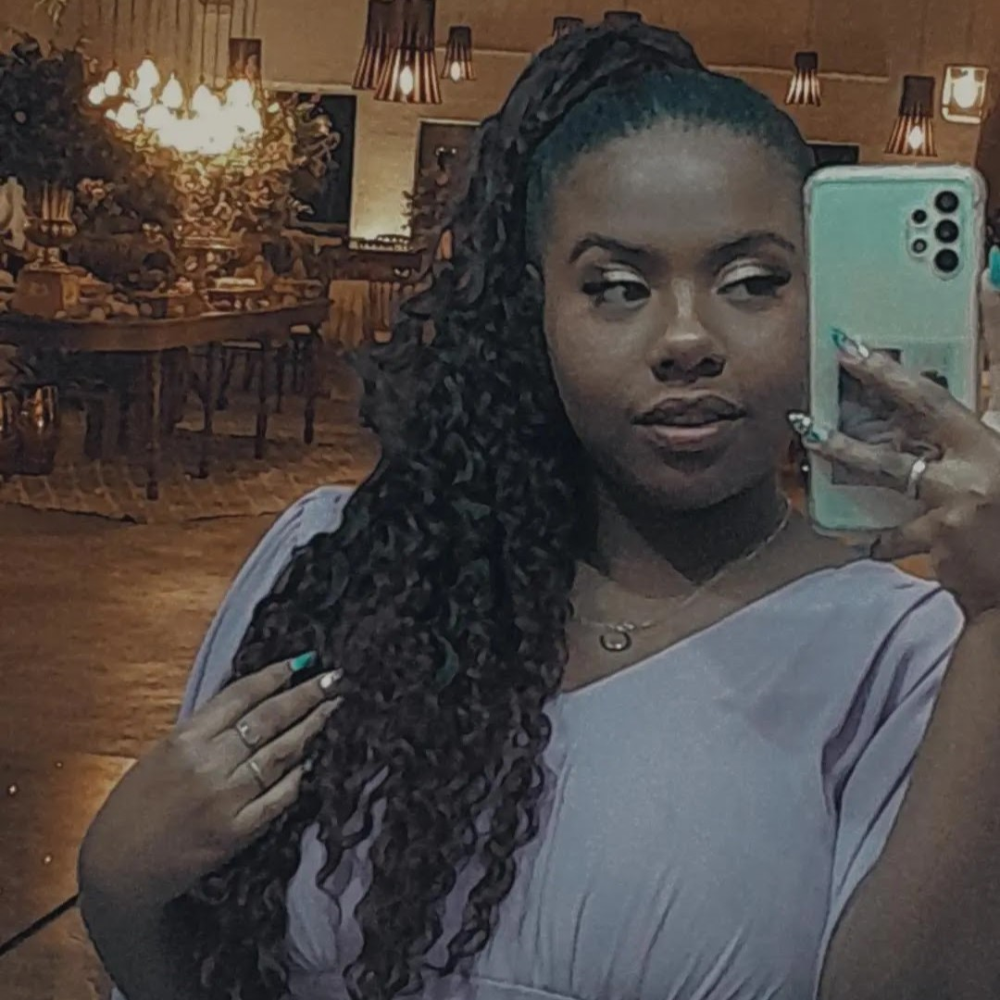

Eu tenho a melhor namorada do mundo
e posso provar
Quem Somos nós
Esses dois aqui em cima são simplesmente o casal perfeito. Imagina só a junção, ela: toda aventureira, já fez e experiênciou de tudo e mais um pouco na vida, conhece um pouco de tudo, mas resolveu descansar e aproveitar a vida com um pouco mais de calma. Justo nesse momento, ela se dá de cara com ele, que sempre foi a versão amis calma, nunca se aventurou muito e quando, depois de um período conturbado, se viu apaixonado por quem era supostamente pra ser só uma amiga. Não que eles fossem completos desconhecidos antes de tudo, mas com a pandemia e a falta de contato, um era (simplesmente) irrelevante para o outro, até que de uma hora pra outra, o outro passou a significar tudo para um.
A nossa história
Essa história é boa, e por isso, é a minha preferida. Eu e quem hoje eu chamo de "meu amor" nem sempre tivemos essa relação. Mas iso não quer dizer que a gente não se conhecesse antes. O ciclo de amizades sempre teve algumas pessoas em comum, mas claro, como a minha "gatinha" era de outro canto da cidade (uma roça que só) era muito raro da gente se ver. Acontece que, e seria impossível contar essa história sem falar desse evento, praticamente em todos os anos os jovens de uma mesma região se reúnem nesse grande evento chamado Meet up. É uma ótima oportunidade pra conhecer pessoas novas, se aproximar dos seus amigos, viajar pra um lugar novo (pra ficar na capela o dia todo, claro) e tudo mais, ou seria, se não fosse a pandemia. Por esse evento global, a área de onde esses jovens que se reuniam eram, diminuiu em um grande número, e portanto, estávamos fadados a algumas poucas pessoas ao invés das centenas como geralmente são. Olhando essa situação, depois de um anúncio de como seram divididos os grupor de jovens, resolvi procurar por alguém, uma alma perdida bem ali, que fizesse parte do meu ciclo de amizades. Próximo próximo não tinha ninguém, mas eu vi ali o nome 'Mariny', uma velha conhecida do acampamento uns 2 anos antes, e "ah, por que não mandar mensagem pra ela, a gente vai passar o dia todo juntos mesmo" eu pensei e fiz. Depois daquele 'estamos na mesma companhia do meet up' tudo mudou. Surgiu uma amizade que eu simplesmente nunca entendi como se fortaleceu tão rápido, mesmo com as demoras e alguns vácuos não propositais da minha parte, nos tornamos amigos próximos e, por que não, irmos pro baile a fantasia de halloween que estava pra acontecer.

Do baile em diante nos aproximamos cada vez mais, e depois de saírmos por acaso como amigos pra ver o filme, o evento, do ano, rolou o tchan! Ali nós dois sentimos alguma coisa diferente, mas pelas condições que eu mesmo causei, nada de mais aconteceu, nada além de eu ter segurado as mãos que hoje em dia eu quero segurar pra vida toda. Passaram os dias, as horas, as noites em claro e o sentimento do dia 21 de dezembro só aumentou. Claro que como tudo que foi narrado até aqui, por acaso, em 2005, ela decidiu nascer justamente no mês de janeiro, no dia 10. E 17 anos depois isso calhou de ser duas semanas depois do nosso primeiro quase encontro. O tempo perfeito, logo depois do natal e do ano novo de muito flerte. E claro, como uma experiente sedutora, ela tinha que me convidar pra comemorar com ela e um monte de gente que eu nunca tinha ouvido falar. Acabou que eles eram todos super simpáticos e mesmo com o "meu amigo da igreja vai vir aí, se comportem" eles não sabiam que eu era o cara e foram super acolhedores comigo. foi nesse dia que tudo aconteceu. Dia 10 de janeiro de 2022, eu com essa gigantesca marca de espinha na cara, ela resolveu me dar aquela chance (certeza que se arrepende até hoje). Depois disso, tivemos alguns outros encontros, e foi só questão de tempo até ficar totalmente caidinha por mim e pela minha lábia apaixonante. Por fim, no último dia de carnaval do mesmo ano, resolvemos começar o nosso relacionamento sério, esse tal de namoro, e eu simplesmente não me arrependo em nada dessa decisão.

Nós eramos só dois adolescentes no ensino médio, como quaisquer outros, então nossa unica responsabilidade era com a escola, e tudo o que a gente mais queria, era que chegasse a quinta ou sexta pra eu sair correndo da escola e pegar o primeiro volta redonda pra te econtrar depois da aula. A gente fazia com primor a ação de vagabundar, se encontrar e ficar atoa mesmo. Curtir na praça, sentar no topo do morro da igreja e assistir o por do sol, tomar um açaí dos trailers.
Mas na verdade, esses são alguns dos momentos que eu mais sinto saudade. Em especial, os dias que eu precisava sair mais cedo e assistir a aula do pré-vestibular e a gente parava em uma lanchonete pra comer um salgado, porque segundo ela, "é muito tempo pra você ficar sem comer nada"